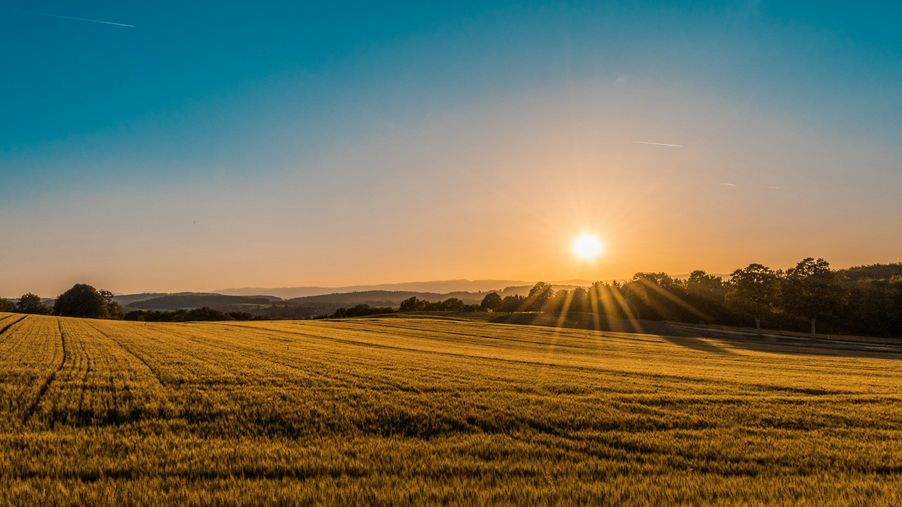

An agronomist receives a 240-photo survey and must find the same affected area across overlapping images.
AI CROP MONITORINGFind crop problems
Find crop problems
in field photos.
For commercial growers and agronomy teams. Fieldwell compares drone and scouting photos, marks signs of crop stress, and turns each survey into a field-by-field inspection report.
BUILT FOR
Commercial growers & agronomy teams

Crop reviewFIELDWELL / 01
North field · Survey 014Prepared sample reportHuman review
Inspect the eastern crop rows
“Yellowing follows three adjacent crop rows.”
Drone image · Area C4Inspect the evidence
YOU PROVIDE
Drone surveys and scouting photos
FIELDWELL USES AI TO PREPARE
A crop-risk map and inspection list
YOUR TEAM DECIDES
Assign an inspection
THE PRODUCT, IN USEThousands of photos in.
Thousands of photos in.
A shorter field-visit list out.
Choose a case, run the prepared analysis and open the evidence behind each finding. The decision stays with the person responsible for the work.
01 / INPUT
The source material
Area C4: yellowing follows three adjacent crop rows. Crop coverage is lower than in the 7 November survey. The nearby service track is excluded from the crop area.
Evidence is prepared for this demonstration. Use the source reference to check the finding.02 / OUTPUT
The review brief
Run the sample.
Then inspect the finding.
See how the source becomes a specific question, a cited observation and a next action.
Source referenceClear findingHuman decision
Sample mode uses prepared results. A live AI service is not connected by default.Evidence → finding → operator decision
WHY THIS NEEDS SUBSTANTIAL AI PROCESSINGReal work creates
Real work creates
a recurring workload.
One drone survey can contain hundreds of overlapping images. The useful job is to compare new observations with the last survey and group repeated signs of stress into areas a field team can inspect.
Planning scenario · not current customer usageEvery new field survey
691,200image reviews / month
2,880survey reports in this scenario
240photos per survey
72 organizations×20 fields per organization×2 surveys per field / month×240 photos per survey
Fresh survey imagery arrives throughout the season. The AI must compare many images before it can produce one useful field report.
A SPECIFIC WORKED EXAMPLE
240 → 2
photos to inspection areas in this prepared example
Prepared scenario, not measured customer results.The proposed AI groups the evidence into two inspection areas, each linked to its source photos.
HOW THE JOB GETS DONEFour steps.
Four steps.
One useful decision.
It supports scouting. A photograph alone cannot confirm disease, nutrient deficiency or a treatment.
- 01
Read the survey
Group photos by field and capture time.
- 02
Look for changes
Compare crop color, coverage and patterns with the previous survey.
- 03
Explain the flags
Point to the image and the area that needs a second look.
- 04
Send the field team
An agronomist reviews the evidence and assigns an inspection.
OPEN THE WORKSPACESee the input.
Enter the workspace See the input.
Check the result.
Commercial growers & agronomy teams can explore the review workflow with prepared sample records.